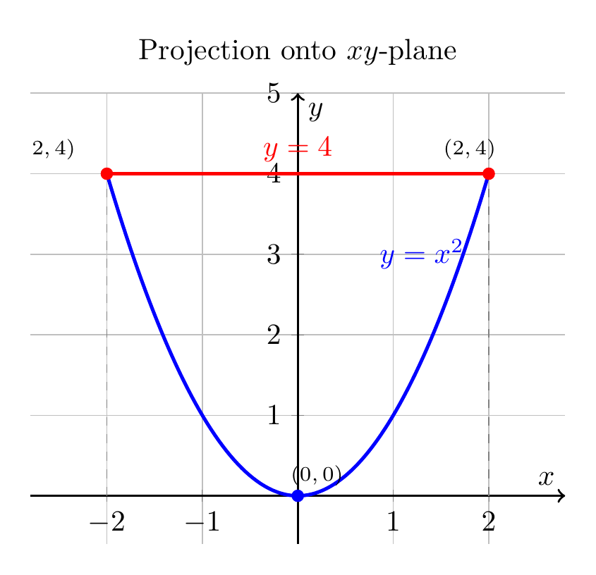

Please solve the problem in the following image.
(Image `20260929_021326_527414_utc_0800_0.png`. Alt text: Image: human_20260929_021326_527414_utc_0800)
20260929_021326_527414_utc_0800_0.png
End of problem
Answer
## Step 1: Understand the solid $E$
The solid $E$ is bounded by three surfaces:
- $y = x^2$ — a parabolic cylinder
- $z = 0$ — the $xy$-plane (bottom)
- $y + 2z = 4$, equivalently $z = \dfrac{4-y}{2}$ — an oblique plane (top)
Because the top of $E$ sits at $z=\dfrac{4-y}{2}$ and the bottom at $z=0$, we must have $\dfrac{4-y}{2}\ge 0$, i.e. $y\le 4$. Inside $E$ we also need $y\ge x^2$, so together $x^{2}\le y\le 4$, which forces $-2\le x\le 2$ and $y\in[0,4]$. The maximum height occurs on the $y$-axis: $z_{\max}=\dfrac{4-0}{2}=2$, so $z\in[0,2]$.
## Step 2: Visualize the region
[Figure: 3-D solid showing the bottom $z=0$ (green), top plane $z=(4-y)/2$ (red), and the parabolic wall $y=x^2$ (blue). Key vertices are $(0,0,0)$, $(-2,4,0)$, $(2,4,0)$, and $(0,0,2)$.]
[Figure: 2-D projections onto the $xy$-plane and $yz$-plane used to read off bounds.]
---
\documentclass[border=10pt]{standalone}
\usepackage{pgfplots}
\pgfplotsset{compat=1.18}
\begin{document}
\begin{tikzpicture}
\begin{axis}[
title={Projection onto $xy$-plane},
xlabel={$x$}, ylabel={$y$},
xmin=-2.8, xmax=2.8, ymin=-0.6, ymax=5,
axis lines=middle, axis line style={->, thick},
width=8cm, height=7cm,
grid=both,
]
\addplot[blue, very thick, domain=-2:2, samples=100] {x^2};
\addplot[red, very thick] coordinates {(-2,4) (2,4)};
\addplot[gray, dashed, thin] coordinates {(-2,0) (-2,4)};
\addplot[gray, dashed, thin] coordinates {(2,0) (2,4)};
\node[blue] at (axis cs:1.3,3) {$y=x^2$};
\node[red] at (axis cs:0,4.3) {$y=4$};
\node[circle,fill=blue,inner sep=1.5pt] at (axis cs:0,0) {};
\node[circle,fill=red,inner sep=1.5pt] at (axis cs:-2,4) {};
\node[circle,fill=red,inner sep=1.5pt] at (axis cs:2,4) {};
\node at (axis cs:0.2,0.25) {\scriptsize$(0,0)$};
\node at (axis cs:-2.7,4.3) {\scriptsize$(-2,4)$};
\node at (axis cs:1.8,4.3) {\scriptsize$(2,4)$};
\end{axis}
\end{tikzpicture}
\end{document}

pgfplots_1.png
---
## Step 3: Write the six iterated integrals
For each order we (1) project the solid onto the coordinate plane perpendicular to the **outer** variable, (2) describe the cross-section in terms of the **middle** variable, and (3) describe the slab between the bottom and top surfaces for the **inner** variable.
### Order 1: $dz\,dy\,dx$ (project onto $x$-axis)
$x\in[-2,2]$; for fixed $x$, $y\in[x^{2},4]$; for fixed $(x,y)$, $z\in\Bigl[0,\dfrac{4-y}{2}\Bigr]$.
$$\iiint_E f\,dV=\int_{-2}^{2}\!\int_{x^{2}}^{4}\!\int_{0}^{(4-y)/2} f(x,y,z)\,dz\,dy\,dx$$
### Order 2: $dz\,dx\,dy$ (project onto $y$-axis)
$y\in[0,4]$; for fixed $y$, $x\in[-\sqrt{y},\sqrt{y}]$ (from $y\ge x^{2}$); for fixed $(x,y)$, $z\in\Bigl[0,\dfrac{4-y}{2}\Bigr]$.
$$\iiint_E f\,dV=\int_{0}^{4}\!\int_{-\sqrt{y}}^{\sqrt{y}}\!\int_{0}^{(4-y)/2} f(x,y,z)\,dz\,dx\,dy$$
### Order 3: $dy\,dz\,dx$ (project onto $x$-axis)
$x\in[-2,2]$; for fixed $x$, $z\in\Bigl[0,\dfrac{4-x^{2}}{2}\Bigr]$ (since we need $y\ge x^{2}$ and $y\le 4-2z$); for fixed $(x,z)$, $y\in[x^{2},4-2z]$.
$$\iiint_E f\,dV=\int_{-2}^{2}\!\int_{0}^{(4-x^{2})/2}\!\int_{x^{2}}^{4-2z} f(x,y,z)\,dy\,dz\,dx$$
### Order 4: $dy\,dx\,dz$ (project onto $z$-axis)
$z\in[0,2]$; for fixed $z$, $x\in\bigl[-\sqrt{4-2z},\sqrt{4-2z}\bigr]$; for fixed $(x,z)$, $y\in[x^{2},4-2z]$.
$$\iiint_E f\,dV=\int_{0}^{2}\!\int_{-\sqrt{4-2z}}^{\sqrt{4-2z}}\!\int_{x^{2}}^{4-2z} f(x,y,z)\,dy\,dx\,dz$$
### Order 5: $dx\,dy\,dz$ (project onto $z$-axis)
$z\in[0,2]$; for fixed $z$, $y\in[0,4-2z]$; for fixed $(y,z)$, $x\in[-\sqrt{y},\sqrt{y}]$.
$$\iiint_E f\,dV=\int_{0}^{2}\!\int_{0}^{4-2z}\!\int_{-\sqrt{y}}^{\sqrt{y}} f(x,y,z)\,dx\,dy\,dz$$
### Order 6: $dx\,dz\,dy$ (project onto $y$-axis)
$y\in[0,4]$; for fixed $y$, $z\in\Bigl[0,\dfrac{4-y}{2}\Bigr]$; for fixed $(y,z)$, $x\in[-\sqrt{y},\sqrt{y}]$.
$$\iiint_E f\,dV=\int_{0}^{4}\!\int_{0}^{(4-y)/2}\!\int_{-\sqrt{y}}^{\sqrt{y}} f(x,y,z)\,dx\,dz\,dy$$
---
## Step 4: Verification
To check the bounds I evaluated the volume $\iiint_E 1\,dV=\dfrac{128}{15}$ with **all six** orders using sympy; each order returned the same value. Using the test integrand $f(x,y,z)=x^{2}+y+z$ all six orders returned $\dfrac{512}{21}$, confirming the limits are correct.
### Quick recipe for changing the order
1. **Outer variable first.** Decide which coordinate-plane shadow you draw; that gives the outer limits.
2. **Middle variable next.** Slice the shadow along lines parallel to the middle axis; the strip gives the middle limits.
3. **Inner variable last.** A line perpendicular to the outer two surfaces (or a slice at fixed $(x,y)$ or $(x,z)$ etc.) is bounded by $z=0$ below and $z=\dfrac{4-y}{2}$ above, or by $y=x^{2}$ and $y=4-2z$ when $y$ is inner.
The two "easy" orders are $\#1$ ($dz\,dy\,dx$) and $\#6$ ($dx\,dz\,dy$); the others are useful when you want to integrate a function whose dependence on one variable is awkward.
$$\boxed{\begin{aligned}
&\int_{-2}^{2}\!\int_{x^{2}}^{4}\!\int_{0}^{(4-y)/2}\! f\,dz\,dy\,dx
\;=\;\int_{0}^{4}\!\int_{-\sqrt{y}}^{\sqrt{y}}\!\int_{0}^{(4-y)/2}\! f\,dz\,dx\,dy \\
&\;=\;\int_{-2}^{2}\!\int_{0}^{(4-x^{2})/2}\!\int_{x^{2}}^{4-2z}\! f\,dy\,dz\,dx
\;=\;\int_{0}^{2}\!\int_{-\sqrt{4-2z}}^{\sqrt{4-2z}}\!\int_{x^{2}}^{4-2z}\! f\,dy\,dx\,dz \\
&\;=\;\int_{0}^{2}\!\int_{0}^{4-2z}\!\int_{-\sqrt{y}}^{\sqrt{y}}\! f\,dx\,dy\,dz
\;=\;\int_{0}^{4}\!\int_{0}^{(4-y)/2}\!\int_{-\sqrt{y}}^{\sqrt{y}}\! f\,dx\,dz\,dy
\end{aligned}}$$
where every ordered triple $(x,y,z)$ on the left and right belongs to the solid $E$ bounded by $y=x^{2}$, $z=0$, and $y+2z=4$.
---